上一篇中我们分享了日志采集中基于Polling+Notify组合的日志保序采集技术，Logtail基于Polling+Notify的组合方案以及日志轮转队列等相关技术实现了单一配置下的日志保序、高效、可靠采集问题。
然而日志采集并不仅仅是单一用户/应用需要完成的工作，例如一个典型的服务器上需要采集的日志数据有：资源类Metric数据、系统监控日志、Nginx访问数据、中间件请求数据、安全审计日志、各类应用中各个不同组件的日志等等；如果应用docker话，保守估计一个docker内的应用有6-7类日志，一台物理机运行50个docker，那即使采集docker内的日志就有300多种配置。
而现在涉及需要获取数据的角色上到看交易大盘的CEO下到查询日志的debug小弟，几乎所有人都会和日志相关。正是这些宝贵的数据才让我们真正成为一家数据型公司。因此，保障各种日志的有效采集是一款合格的日志采集Agent必须要解决的问题。
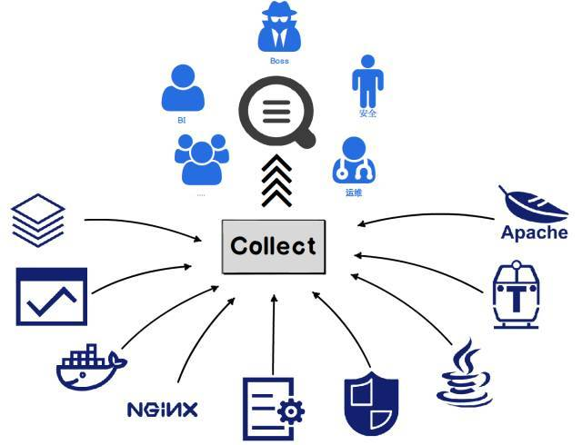
多租户隔离的特性与挑战
多租户隔离技术早在20世纪60年代的大型主机中就已经开始使用，发展到今天非常多的应用/系统都应用了该技术。在每种不同的应用/系统中对于多租户隔离都有不同的诠释，本文中我们仅仅对应用在日志采集中的多租户隔离进行探讨。
多租户隔离特性
首先需要搞清楚日志采集场景下的多租户隔离需具备哪些特性，这里我们总结以下5点：隔离性、公平性、可靠性、可控性、性价比
- 隔离性： 多租户隔离最基本特性，多个采集工作之间互不影响，部分采集配置阻塞不影响其他正常采集
- 公平性： 保证各个阶段（读取、处理、发送）多个配置之间的公平性，不能因为某个配置下日志写入量大而导致其他配置被处理的概率降低
- 可靠性： 无论在何种场景，可靠性都至关重要，多租户隔离下，如果部分采集阻塞，agent可以暂停该配置采集，但恢复时需尽可能保证数据不丢失
- 可控性： 可控性主要体现在资源和行为的可控，agent需要具备控制各个配置的资源占用在合理范围，并且具备控制采集速率、暂停/开启等行为
- 性价比： 以上特性最终方案实现时最需要关注的就是性价比，如何在尽可能少的资源占用情况下实现尽可能优的多租户隔离方案才是技术可行性与适用性的关键
多租户隔离挑战
目前logtail正逐步成为集团的基础设施之一，在集团内部一台服务存在数百个采集配置属于常态，每个配置的优先级、日志产生速度、处理方式、上传目的地址等都有可能不同，如何有效隔离各种自定义配置，保证采集配置QoS不因部分配置异常而受到影响？
一台服务器的数百个配置涉及不同应用的不同层面日志，其中部分日志优先级高而部分优先级低，关键时刻需要对低优先级日志降级停采，但又希望降级期间过后还能够将之前的数据追回，如何有效地限制低优先级配置以及动态降级且极可能保证日志不丢失？
目前Logtail在整个集团以及公有云的部署量近百万，如果logtail能够节省1MB内存使用，那整体将能够减少近1TB的内存，同时日志采集Agent的定位是服务的辅助应用，一台服务器并不能将主要资源提供给日志采集。如何在尽可能低的资源占用情况下尽可能、尽量公平以及尽量有效地调度各个配置？
业界采集Agent多租户隔离方案
首先我们来看一下业界的采集agent对于多租户隔离方面主要采用的技术，这里主要关注Logstash、Fluentd以及最近较火的Filebeat，我们分别从以上5个特性对这三款产品进行对比和分析。
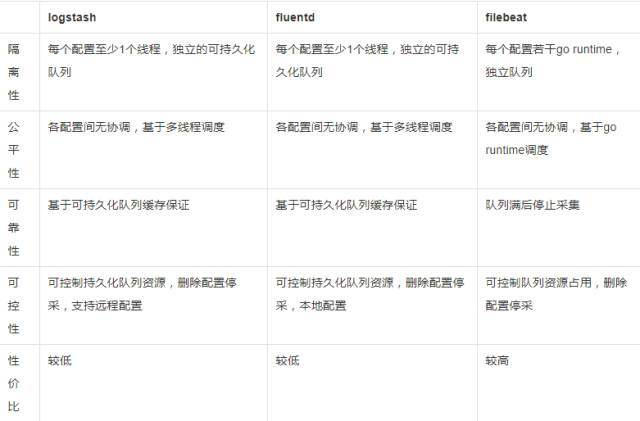
Logstash、Fluentd和Filebeat都属于pipeline的架构，根据语言不同，分别使用独立的线程/go runtime实现了pipeline功能，每个pipeline内部顺序执行，各个pipeline间互相独立运行，此种方式隔离性较好，实现较为简单，在小规模场景下较为适用。然而随着配置数量增长，相应的线程数/go runtime呈等比上升，在采集配置较多的情况下资源难以控制；而且由于各个pipeline间完全依赖底层（操作系统/go runtime）调度，当CPU资源无法全部满足时，数据量较高的配置会占用较多的执行时间，导致其他数据较少的配置获取资源的概率降低。
Logtail多租户隔离方案
整体架构
不同于当前主流的开源采集agent实现，logtail采用的是更加复杂的架构，事件发现、数据读取、解析、发送等都采用固定数量的线程（解析线程可配置），线程规模不会随配置数增多。虽然所有配置都运行在同一执行环境，但我们采取了一系列的措施保障各个配置处理流程的互相隔离、配置间调度的公平、数据采集可靠性、可控性以及非常高的资源性价比。
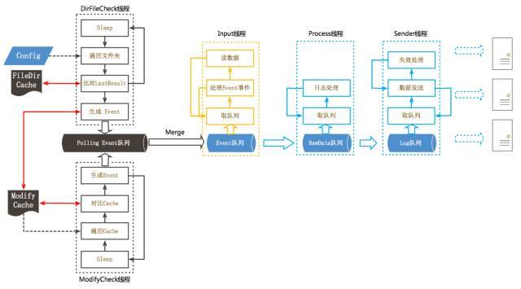
下面我们主要介绍该方案中一些实现多租户隔离的较为关键性的技术
基于时间片的采集调度
业界主流的Agent对于每个配置会分配独立的线程/go runtime来进行数据读取，而logtail数据的读取只配置了一个线程，主要原因是：
单线程足以完成所有配置的事件处理以及数据读取，数据读取的瓶颈并不在于计算而是磁盘，对于正常的服务器，每秒基本不可能产生超过100MB的日志，而logtail数据读取线程可完成每秒200MB以上的数据读取（SSD速率可以更高）
单线程的另一个优势是可以使事件处理和数据读取在无锁环境下运行，相对多线程处理性价比较高
但单线程的情况下会存在多个配置间资源分配不均的问题，如果使用简单的FCFS方式，一旦一个写入速度极高的文件占据了处理单元，它就一直运行下去，直到该文件被处理完成并主动释放资源，此方式很有可能造成其他采集的文件被饿死。因此我们采用了基于时间片的采集调度方案，使各个配置间尽可能公平的调度。
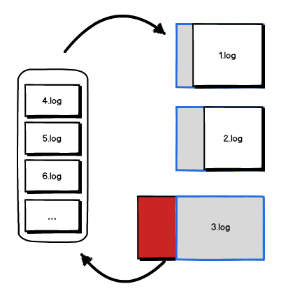
- Logtail会将Polling以及Inotify事件合并到无锁的事件队列中（参见上一篇），每个文件的修改事件会触发日志读取；
- 日志读取将从上一次读取的偏移量LastReadOffset处开始，尝试在固定的时间片内将文读取到EOF处；
- 如果时间片内读取完毕，则认为该事件处理完毕，删除该事件；
- 如果时间片内读取未完成，则将该时间重新push到队列尾部，等待下一次调度。
该方案使得每个采集目标得到公平地对待，所有文件都有被调度运行的机会，很好地解决了采集目标的饿死现象。
多级高低水位反馈队列
基于时间片的采集调度保证了各个配置的日志在数据读取时得到公平的调度，满足了多租户隔离中基本的公平性，但对于隔离性并未起到帮助作用。例如当部分采集配置因处理复杂或网络异常等原因阻塞时，阻塞配置依然会进行处理，最终会导致队列到达上限而阻塞数据读取线程，影响其他正常配置。
为此我们设计了一套多级高低水位反馈队列用以实现多个采集配置间以及读取、解析、发送各个步骤间有效的协调和调度。虽然和进程调度中Multilevel feedback queue命名较为类似，但队列实现以及适用场景有很大区别。
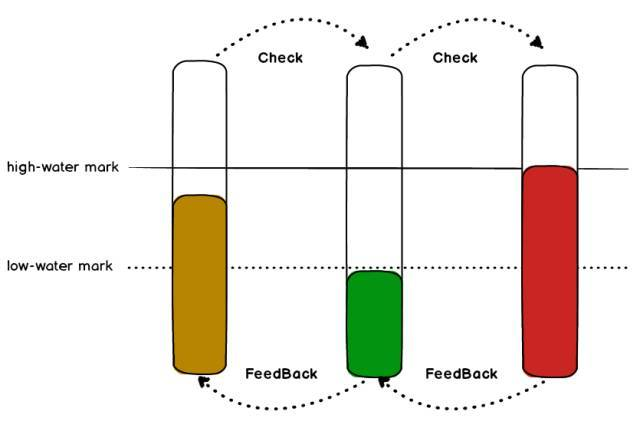
多级
- 这里的多级指的是处理过程的多级，即各个处理过程间会有一个这样的队列且相邻队列互相关联
- 例如在Logtail的数据读取、处理、发送流程中需要在读取->解析以及解析->发送间各自设置一个这样的队列
高低水位：
- 单一队列中设置了高低两个水位
- 当队列增长到高水位时，停止非紧急数据写入（例如进程重启时、数据拆分等特殊情况允许写入）
- 当队列从高水位消费到低水位时，再次允许写入
反馈：
- 反馈分为同步和异步两种
- 在准备读取当前队列数据时会同步检查下一级队列状态，当下级队列到达高水位时跳过此队列
- 当前队列从高水位消费到低水位时，异步通知关联的前一级队列
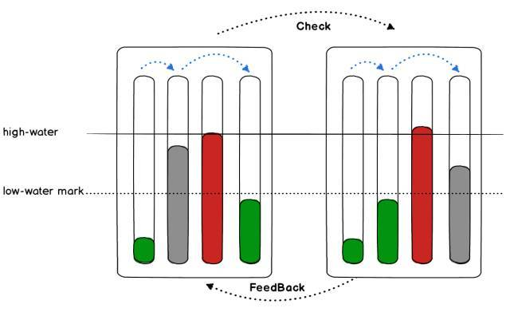
由于多个配置存在，所以我们会为每个配置创建一组队列，每个队列使用指针数组实现，每一级中所有配置队列公用一个锁，对于性能以及内存消耗较为友好。Logtail中的多级高低水位反馈队列结构如下：
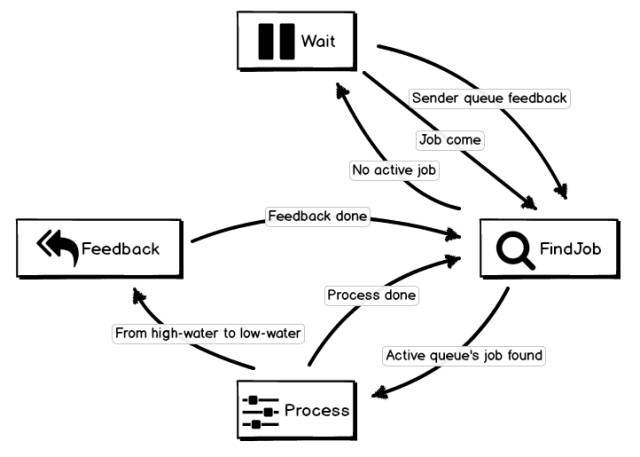
我们以日志解析这个步骤的工作方式来观察多级反馈队列的行为：
- 初始状态下解析线程处理Wait状态，当有数据到达或下一级发送线程某一配置的队列从高水位消费到低水位时，进入FindJob状态；
- FindJob会从上一次处理的队列位置顺序查找当前有数据且下一级队列可以写入的队列，若查找到则进行Process状态，否则进行Wait状态；
- Process对于当前job解析完后，判断该job所属队列是否从高水位到达低水位，若是则进入Feedback状态，否则回到FindJob查找下一个有效job；
- Feedback状态会向关联的上一级队列发送信号，参数携带当前队列ID，用以触发上一级流程运行，信号发送完毕后进入FindJob状态；
基于多级高低水位反馈队列的处理过程中，当遇到下一级阻塞的队列时直接跳过，防止因阻塞Job的处理导致线程阻塞，具有较高的隔离性；FindJob会记录上一次查找的队列ID，下次查找时会从该ID之后的队列开始，保证了各个配置间调度的公平性。
流控以及阻塞处理
上一节的多级高低水位反馈队列解决了多配置间的隔离性和公平性问题，但对于可控性以及可靠性方面还存在一些问题。例如：
- 无法精确控制每个配置的的采集流量，只能通过删除采集配置停止采集
- 如果某一配置完全阻塞时，当该配置关联日志文件轮转，恢复阻塞时将丢失轮转前的数据
这里主要包括三个部分：事件处理、数据读取逻辑以及数据发送控制：
- 事件处理与数据读取无关，即使读取关联的队列满也照常处理，这里的处理主要是更新文件meta、将轮转文件放入轮转队列，具体可查看上一篇文章；此种方式可保证即使在配置阻塞/暂停的情况下依然保证及时文件轮转也不会丢失数据；
- 当配置关联的解析队列满时，如果将事件重新放回队列尾，则会造成较多的无效调度，使CPU空转。因此我们在遇到解析队列满时，将该事件放到一个专门的blocked队列中，当解析队列异步反馈时重新将blocked队列中的数据放回事件队列；
- Sender中每个配置的队列关联一个SenderInfo，SenderInfo中记录该配置当前网络是否正常、Quota是否正常以及最大允许的发送速率。每次Sender会根据SenderInfo中的状从队列中取数据，这里包括：网络失败重试、Quota超限重试、状态更新、流控等逻辑
整体流程梳理
现在让我们回顾一下logtail在多租户隔离中使用的相关技术，具体如下图：
通过时间片采集调度保证各个配置数据入口的隔离性和公平性
通过多级高低水位反馈队列保证在极低的资源占用下依然可以保证各处理流程间以及多个配置间的隔离性和公平性
通过事件处理不阻塞的机制保证即使在配置阻塞/停采期间发生文件轮转依然具有较高的可靠性
通过各个配置不同的流控/停采策略以及配置动态更新保证数据采集具备较高的可控性
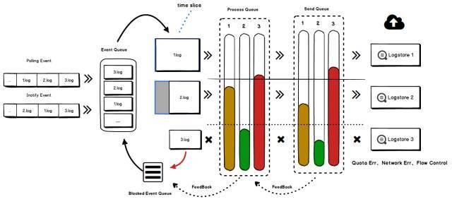
通过以上几点设计的组合，我们使用极低的资源构建出了虚拟的多租户Pipleline结构：
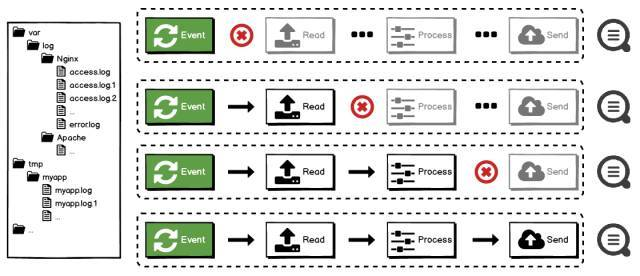
实战见真知
多租户隔离中的性价比问题只靠语言描述是苍白无力的，最好的方式还是拿数据说话：
双11背后的日志采集
目前logtail已承载阿里云全站、所有云产品服务、全球各Region部署、阿里巴巴集团（淘宝、天猫、菜鸟等）上重要服务的数据采集。每天采集接近百万服务器上的实时数据，对接数千个应用与消费者。今年双十一蚂蚁金服（支付宝）几乎所有应用、用户及服务器产生的数据都由Logtail采集。
目前logtail在蚂蚁安装了数十万台，平均每台机器上存在近百个采集配置，每天采集上千个应用数PB的日志。在双11期间，为了保证核心应用数据采集正常，双11零点前对几百个应用提前降级停采，零点高峰过后逐批恢复日志采集，logtail在3个小时追完了这几百个应用5小时的高峰数据，并且保证停采期间日志即使轮转/删除也不会丢失。下图是追数据期间logtail的CPU、内存占用：
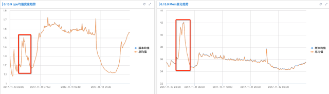
可以看到即使在双11期间logtail的平均cpu占用也只有单核的1.7%，平均内存最高也只有42M。追数据期间cpu相对只上升0.4%、内存只升高7M。抛开功能不谈，logtail对于资源的控制是开源采集Agent无法达到的。
性能对比
在logstash、fluentd和filebeat中，多租户实现最好且性能最高的是filebeat，所以这里我们拿filebeat进行对比。
测试机配置：
CPU : 16核 Intel(R) Xeon(R) CPU E5-2682 v4 @ 2.50GHz
MEM : 64GB
DISK: 4块1TB SSD（日志写入单独一块SSD）
filebeat配置优化
网上filebeat的benchmark约为30K/s(日志条数每秒)，这里为了尽可能提高filebeat性能，我们把filebeat读文件缓存设置为512k，将输出配置到一块单独的SSD中并将日志rotate的size设为4GB（相对网上benchmark性能提升一倍左右）
配置数较少情况
下面是logtail与filebeat在极简模式（单行日志，不对日志解析）分别在1、2、4、8个配置下、日志写入速度分别为0.1、1、5 MB/s的CPU和内存占用
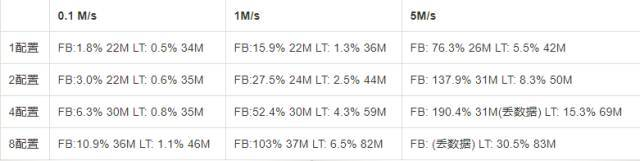
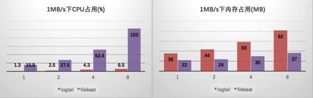
filebeat对于内存控制较优，但性能相对logtail有一定差距：filebeat处理能力约为18MB/s，测试中一条日志约为300字节，换算成日志条数约为60K/s（网上benchmark约为30K/s）。
可以看出filebeat相对logstash和fluentd有一定的优势(快10倍左右)；logtail的极简模式（不对日志解析，和filebeat类似）下的处理能力约为150M/s，相对优化后的filebeat有8倍左右的性能提升。由于filebeat达到18MB/s耗费了200%左右的cpu，logtail达到150MB/s只需消耗100%的cpu，所以如果从cpu的性价比上logtail相比filebeat有十多倍的优势。
配置数量较多
下面对比100个配置情况下filebeat和logtail的性能：
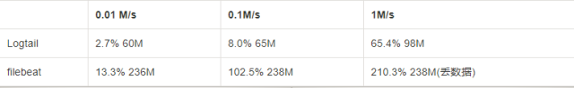
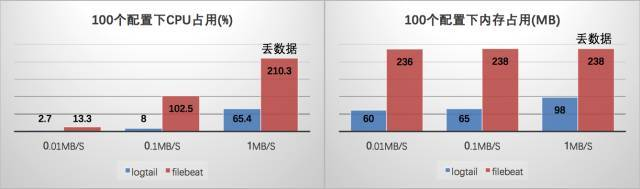
当配置上升至100个时，filebeat 内存占用明显升高，而logtail的内存相对增长较低；100个配置下logtail的cpu消耗与相同数据量情况下2配置的基本无区别。同时观察filebeat cpu消耗情况，可以看到约20%的cpu消耗在涉及和调度相关的futex调用，可见当配置数增多时即使依赖go的协程调度方式也会消耗较多的cpu。
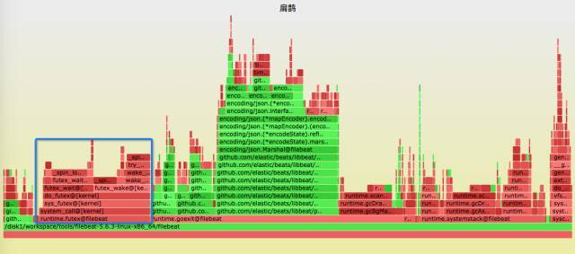
总结
一个数据采集软件看起来很微小很简单，但当遇到超大的规模、超多的用户、超级的数据量时一切都需要重新考虑。阿里云日志服务的logtail就是这样一款历经上百万的部署量、每天数PB的数据、近万个应用洗礼的日志采集Agent。
相对开源软件，我们最大的优势是有阿里、有双11这样的环境给我们练兵、采坑。今天分享的多租户隔离技术，对于开源agent或许都不会考虑这个问题，但相信未来业务规模上升到一定体量肯定会遇到，希望到时候我们的分享能给大家一定的帮助。
展望
改进
- 目前logtail虽然在多租户的公平性上做的比较好，但对于配置的优先级上面并没有做太多的优化，未来我们需要在这方面多下功夫，毕竟不同类型的数据重要程度是不一致的，采集的优先级也需要更精确。
- 当前logtail的监控功能对于用户的可见度太低，未来我们考虑会将logtail的运行数据、错误数据等打包成一套Agent监控报警方案，将logtail的一体化采集方案做的更加完备。
新功能
logtail即将推出的新版本中还将支持http、mysql binlog以及mysql sql输入源，欢迎大家体验：
- 支持http作为输入源，用户可以配置特定的url，logtail会定期请求并将请求数据处理并上传到日志服务。此方式能支持采集nginx、haproxy、docker daemon等能提供http接口的数据。
- 支持mysql binlog作为输入源（包括RDS），以binlog形式同步数据到日志服务中，类似canal
- 支持mysql sql作为输入源，可通过select语句自定义将数据采集到日志服务中，支持增量采集

...
...
Copyright 2021 sunfy.top ALL Rights Reserved